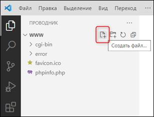
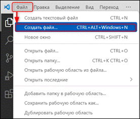
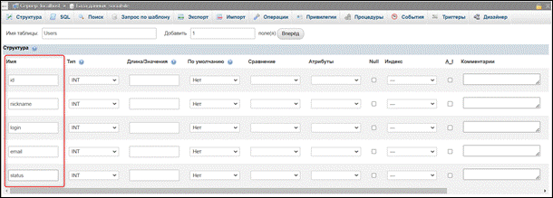
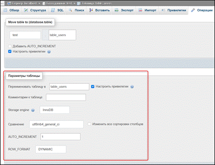

Занятие
1. Начало работы. Основы
языков программирования
Задача урока: познакомить учеников с
основами популярных языков программирования HTML, CSS, PHP, а также с библиотекой JQuery, основанной на языке JavaScript, и языком запросов.
На занятии мы
узнаем:
1.
Основные направления HTML, CSS, PHP и JQuery.
2.
Как создавать таблицу в phpMyAdmin.
3.
Как писать в терминале на
языке запросов.
4.
Синтаксис команд на языке
запросов.
Начало работы и проверка Visual Studio Code
Откроем рабочую папку, в которой у нас будет
храниться проект. Есть два способа ее открыть (рис. 1.1 – 1.2).
|
|
Проект – проект содержит все файлы, которые будут составлены в исполняемую
программу, библиотеку или веб-сайт. Эти файлы могут включать исходный код,
значки, изображения, файлы данных и многое другое. |
|
|
|
|
Рис. 1.1. Первый способ открытия папки |
Рис. 1.2. Второй способ открытия папки |
Когда появится окно проводника, необходимо
найти путь, где лежит AMPPS, и
внутри нее выбрать папку «WWW» (рис. 1.3). Соглашаемся с просмотром данной папки, указав галочку
соглашения (рис. 1.4, п. 1), после чего нажимаем «Да, я доверяю авторам» (рис.
1.4, п. 2).
|
|
|
|
Рис. 1.3. Выбор папки |
Рис. 1.4. Соглашение на просмотр файлов |
У нас открывается рабочая
область папки, в которой будут сохраняться все наши наработки. Протестируем ее
работоспособность, создав тестовый файл для html. Для этого нажмем на специальный
значок «Создать файл…» (рис. 1.5), либо зайдем в основное меню «Файл» и выберем
«Создать файл…» (рис. 1.6).
|
|
Рабочая область – это то, как Visual
Studio Code представляет любую коллекцию файлов в открытой папке. Сама по
себе рабочая область не понимает содержимое или компоненты, связанные с
файлами в папке. Она предоставляет общий набор API-интерфейсов для функций и
расширений для создания и использования данных, с которыми могут работать
другие пользователи. |
|
 |
 |
|
Рис. 1.5. Первый способ создания файла |
Рис. 1.6. Второй способ создания файла |
Назовем файл «test.html» (рис. 1.7, п. 1),
откроется окно для написания программного кода, укажем слово «html», и программа выдаст
варианты макета. Выбираем «html.5» (рис. 1.7, п. 2), после чего на экране отобразится шаблон кода, в его
теле напишем текст при помощи тега «p»,
который должен вывестись в браузере (рис. 1.8).
|
|
Тег <> – состоит из имени, за
которым может следовать необязательный список атрибутов. Весь тег (вместе с
атрибутами) заключается в угловые скобки <>:< имя_тега
[атрибуты]>. Как правило, теги являются парными и состоят из начального и
конечного тегов, между которыми и помещается информация. DOCTYPE – отвечает за корректное
отображение веб-страницы браузером. Элемент <html> – является корневым элементом документа. Все остальные элементы
содержатся внутри него. Все, что находится за пределами элемента, не
воспринимается браузером как HTML-код и никак им не обрабатывается. Элемент <head> – содержит техническую информацию о странице: заголовок, описание,
ключевые слова для поисковых машин, кодировку и т. д. Введенная в нем
информация не отображается в окне браузера, однако содержит данные, которые
указывают браузеру, как следует обрабатывать страницу. Элемент <meta> – с его помощью можно задать описание содержимого страницы и ключевые
слова для поисковых машин, автора HTML-документа и прочие свойства
метаданных. Элемент <title> – текст, размещенный внутри элемента, отображается в строке заголовка
веб-браузера. Элемент <body> – это тело в котором располагается все содержимое документа. Элемент <p> – представляет абзац.
Абзацы - это блоки текста, физически отделенные от смежных блоков пустыми
строками. |
|
|
|
|
Рис. 1.7. Создание тестового файла |
Рис. 1.8. Проверка работоспособности html |
После совершенных действий
сохраняем все изменения, выбрав из верхнего меню «Файл» и нажав кнопку
«Сохранить все», либо можно указать «Автосохранение» (рис. 1.9). После можно
перейти в браузер через программу AMPPS, нажав на иконку в виде карты мира (рис. 1.10).
|
|
|
|
Рис. 1.9. Сохранение изменений |
Рис. 1.10. Открытие браузера для проверки |
В браузере откроется список с файлами, в нем найдем тот, что сейчас
создали с расширением .html
(рис. 1.11). Нажмем на него и перейдем на страницу с текстом (рис. 1.12). При
помощи сочетания клавиш Ctrl+U можно увидеть код, что мы писали в Visual Studio Code. Так мы убедимся, что код html работает исправно (рис. 1.13).
|
|
|
|
|
Рис. 1.11.
Открытие тестового файла html |
Рис. 1.12.
Работа тестового кода html |
Рис. 1.13.
Отображение кода в браузере |
Теперь проверим работу php кода. Как и с предыдущим файлом, его необходимо создать и задать имя «test.php» (рис. 1.14, п. 1). После
запишем код с текстом (рис. 1.14, п. 2), сохраним все наши изменения и запустим
в браузере.
|
|
Языковая конструкция «echo» –
выводит одну или более строк. |
Рис. 1.14. Создание тестового файла php
Как и с файлом html,
выводится список с файлами (рис. 1.15). Выбираем тот, что создали с расширением
php, запускаем его и
видим текст (рис. 1.16). Также можно посмотреть код в браузере при помощи
горячих клавиш (рис. 1.17). Проверка работоспособности программы на этом окончена!
|
|
|
|
|
Рис. 1.15. Открытие тестового файла php |
Рис. 1.16. Работа тестового кода php |
Рис. 1.17.
Отображение кода php в браузере |
Основы HTML, CSS, PHP и JQuery
Основы HTML содержат
основные правила языка HTML, описание структуры HTML-страницы, отношения в
структуре HTML-документа между HTML-элементами.
HTML-документ - это
обычный текстовый документ, он может быть создан как в обычном текстовом
редакторе, так и в специализированном, с подсветкой кода. HTML-документ имеет
расширение .html.
HTML-документ состоит
из дерева HTML-элементов и текста. Каждый элемент обозначается в исходном
документе начальным (открывающим) и конечным (закрывающим) тегом (за редким
исключением).
Начальный тег показывает, где
начинается элемент, конечный - где заканчивается. Закрывающий тег
образуется путем добавления слэша (/) перед именем
элемента: <имя элемента>…</имя элемента>. Между начальным и
закрывающим тегами находится содержимое элемента - контент.
Элементы,
представленные одиночными тегами, не могут хранить в себе содержимое напрямую:
оно прописывается как значение атрибута, например, элемент <input
type="button" value="Кнопка"> создаст кнопку с
текстом Кнопка внутри.
Элементы могут
вкладываться друг в друга,
например, <p><i>Текст</i></p>. При вложении
следует соблюдать порядок их закрытия (принцип «матрёшки»). Например,
следующая запись будет
неверной: <p><i>Текст</p></i>.
HTML-элементы могут
иметь атрибуты (глобальные, применяемые для всех HTML-элементов, и
собственные). Атрибуты прописываются в открывающем теге элемента и содержат имя
и значение, указываемые в формате: имя атрибута="значение".
Атрибуты позволяют изменять свойства и поведение элемента, для которого они
заданы.
Каждому элементу
можно присвоить несколько значений class и только одно
значение id. Множественные значения class записываются через
пробел: <div class="nav top">.
Значения class и id должны состоять только из букв, цифр,
дефисов и нижних подчеркиваний и должны начинаться только с букв или цифр.
Браузер просматривает
(интерпретирует) HTML-документ, выстраивая его структуру (DOM) и отображая ее в
соответствии с инструкциями, включенными в этот файл (таблицы стилей, скрипты).
Если разметка правильная, то в окне браузера будет отображена HTML-страница,
содержащая HTML-элементы - заголовки, таблицы, изображения и т. д.
Процесс
интерпретации начинается прежде, чем веб-страница полностью загружена в
браузер. Браузеры обрабатывают HTML-документы последовательно, с самого начала,
при этом обрабатывая CSS и соотнося таблицы стилей с элементами страницы.
HTML-документ состоит
из двух разделов: заголовка - содержимое элемента <head> и
содержательной части - содержимое <body>.
CSS
(Cascading Style Sheets) - язык таблиц стилей, который
позволяет прикреплять стиль (например, шрифты и цвет) к структурированным
документам (например, документам HTML и приложениям XML).
Обычно
CSS-стили используются для создания и изменения стиля элементов веб-страниц и
пользовательских интерфейсов, написанных на языках HTML и XHTML, но также могут
быть применены к любому виду XML-документа, в том числе XML, SVG и XUL.
Отделяя
стиль представления документов от содержимого документов, CSS упрощает создание
веб-страниц и обслуживание сайтов.
CSS
поддерживает таблицы стилей для конкретных носителей, поэтому авторы могут
адаптировать представление своих документов к визуальным браузерам, слуховым
устройствам, принтерам, брайлевским устройствам, карманным устройствам и т. д.
Каскадные
таблицы стилей описывают правила форматирования элементов с помощью свойств и
допустимых значений этих свойств. Для каждого элемента можно использовать
ограниченный набор свойств, остальные свойства не будут оказывать на него
никакого влияния.
Объявление
стиля состоит из двух частей: селектора и объявления.
В HTML имена элементов нечувствительны к регистру, поэтому «h1» работает так же,
как и «H1». Объявление состоит из двух частей: имя свойства (например, color) и значение свойства (grey).
Селектор сообщает браузеру, какой именно элемент форматировать, а в блоке
объявления (код в фигурных скобках) перечисляются форматирующие команды -
свойства и их значения.
PHP – это распространённый язык
программирования общего назначения с открытым исходным кодом. PHP специально
сконструирован для веб-разработок, и его код может внедряться непосредственно в
HTML.
PHP
отличается от JavaScript тем, что PHP-скрипты выполняются на сервере и
генерируют HTML, который посылается клиенту. Если бы у вас на сервере был
размещён скрипт, подобный приведенному выше, клиент получил бы только результат
его выполнения, но не смог бы выяснить, какой именно код его произвёл. Вы даже
можете настроить свой сервер таким образом, чтобы обычные HTML-файлы
обрабатывались процессором PHP, так что клиенты даже не смогут узнать, получают
ли они обычный HTML-файл или результат выполнения скрипта.
PHP
крайне прост в освоении, но вместе с тем способен удовлетворить запросы
профессиональных программистов. Не пугайтесь длинного списка возможностей PHP.
Вы можете быстро начать программировать, и уже в течение нескольких часов
сможете создавать простые PHP-скрипты.
jQuery - библиотека JavaScript,
содержащая в себе готовые функции языка JavaScript. Все операции jQuery
выполняются из кода JavaScript.
Библиотека
jQuery производит манипуляции с html-элементами, управляя их поведением и
используя DOM для изменения структуры веб-страницы. При этом исходные файлы
HTML и CSS не меняются, изменения вносятся лишь в отображение страницы для
пользователя.
Для выбора элементов используются
селекторы CSS. Выбор осуществляется с помощью функции $(). При вызове функция $() возвращает новый экземпляр объекта JQuery,
который оборачивает ноль или более элементов DOM и позволяет взаимодействовать
с ними различными способами.
Выполнение
различных сценариев возможно только после окончания загрузки структуры
документа document, когда браузер преобразует html-код
страницы в дерево DOM.
Работа с MySQL
|
|
MySQL - это свободная система
управления базами данных, которая создаётся путём построения таблиц с
определёнными свойствами. При помощи языков программирования, таких как PHP,
Perl, Basic и других, возможно сохранение определённых данных в MySQL, а
также их вывод на страницу в виде HTML. phpMyAdmin - веб-приложение с открытым исходным кодом, написанное на языке PHP и
представляющее собой веб-интерфейс для администрирования баз данных MySQL. В
данный момент phpMyAdmin позволяет: создавать и удалять базы данных, создавать,
копировать, удалять, переименовывать и изменять таблицы, выполнять
SQL-запросы, осуществлять поиск в базе данных или в её разделах и многое
другое. |
Ознакомимся с MySQL и посмотрим на базу данных phpMyAdmin. Перейдем в пункт управления (рис. 1.18). Нас
переносит на домашнюю страницу Apache AMPPS, где находится весь
пункт управления. Находим раздел «Database Tools»: внутри него лежит нужная ссылка «phpMyAdmin», нажимаем на нее (рис. 1.19).
|
|
|
|
Рис. 1.18. Переход на сайт управления базами |
Рис. 1.19. Ссылка на phpMyAdmin |
Запускается
приветственное окно, в котором потребуется ввести пользователя (root) и пароль (mysql) (рис. 1.20). Попадаем
на главную страницу разработки. Теперь создадим собственную базу данных для
сайта (рис. 1.21).
Рис. 1.20. Авторизация в phpMyAdmin
Рис. 1.21. Главная страница
Для ее создания перейдем во вкладку «Базы данных» в
верхней панели сайта (рис. 1.22, п. 1), откроется ее настройка. Сразу можно
заметить, что создано 4 базы данных, они являются стандартными, поэтому трогать
их не нужно (рис. 1.22, п. 2). Указываем имя базы «SocialSite» (рис. 1.22, п. 2-3).
|
|
База данных (БД) - это организованная структура, предназначенная для
хранения/изменения/обработки взаимосвязанной информации. |
Рис. 1.22. Создание базы данных
После создания база данных появится в левом трейе,
можно увидеть, что ее структура пустая.
Создадим тестовую таблицу, чтобы посмотреть, как все работает. Указываем имя
таблицы «Users» и количество столбцов – 5 (рис. 1.23). У нас создалась структура таблицы, которую необходимо
заполнить.
Рис. 1.23. Создание таблицы базы данных
В столбце «Имя»
заполним все пустые поля: id (ключ), nickname, login, email и status (рис. 1.24). Структура может изменяться в зависимости от логики работы,
поэтому на данный момент она является тестовой, далее мы будем ее изменять под
наш сайт.

Рис. 1.24. Заполнение полей имени
|
|
Открытие
Powershell
на Windows
10 и Windows
11 немного отличается. В первом случае необходимо зажать кнопку Shift
и нажать
правую кнопку мыши, выбрав «Открыть Powershell», во втором достаточно
просто нажать правую кнопку мыши и выбрать «Терминал». |

Прежде чем мы
сохраним структуру данной таблицы, попробуем сделать то же самое, только через Powershell – поработаем с
языком запросов. Для этого перейдем в специальную папку в AMPPS с названием «bin». Открыв ее,
зажимаем клавишу Shift и нажимаем
правой кнопкой мыши по пустому месту внутри нее, выбираем «Открыть Powershell здесь» (рис. 25). Откроется окно терминала, в котором
описываем команду запуска MySQL. В качестве
параметра передаем user «-u root» и пароль «-p», который
нужно ввести (mysql) (рис. 1.26).
|
|
Консоль (командная строка/терминал) - это приложение, которое предоставляет службы ввода-вывода для
приложений в символьном режиме. |
Рис. 1.25. Открытие консоли
Рис. 1.26. Команда запуска MySQL
Мы зашли в MySQL monitor, теперь можно писать команды. Ознакомимся с
несколькими командами и работой базы данных:
1)
show databases; – данная команда
выводит всю информацию обо всех базах, которые присутствуют в нашей базе;
2)
→ – символ ожидания команды MySQL. Чтобы выйти из нее,
нажмите клавиши Ctrl+C;
3)
сreate database «Имя базы»; – создание базы;
4)
use «Имя базы»; – выбор базы данных для изменений.
Например,
создадим пользователя и дадим ему права на использование нашей базы данных «test».
5)
exit – выход из MySQL.
Вот мы и
познакомились с несколькими командами языка запросов в консоли, дальше
посмотрим на работу Apache через phpMyAdmin. Закрываем командную строку, переходим на страницу phpMyAdmin, обновляем ее и видим нашу базу «test» (рис. 1.27,
п. 1). Добавим в нее новую таблицу «table» (рис. 1.27,
п. 2).
Рис. 1.27. Создание таблицы в тестовой базе
Как и в случае
с предыдущей таблицей, заполняем пустые поля в столбце «Имя» такими значениями:
id, name, age, login и password, после чего
настраиваем их тип, длину и указываем у элемента «id» индекс (рис. 1.28, п. 1). При наведении на тип phpMyAdmin дает ему определение. Запустим тестовый режим, сохранив изменения, и
посмотрим, как все работает (рис. 1.28, п. 2).
|
|
Длина/Значение – параметр, который
задает определенную длину. Сравнение – тип кодировки. Индекс – оптимизация данных для выборки. |

Рис. 1.28. Настраивание полей
После нажатия на кнопку «Сохранить» появится сообщение о том, что имя «table» является зарезервированным в MySQL. Нажимаем на кнопку «Отмена» (рис. 1.29) и
переименовываем таблицу в «table_users» (рис. 1.30), после чего ее можно будет
сохранить.
Рис. 1.29. Сообщение об ошибке использования
имени
Рис. 1.30. Изменение имени таблицы
Происходит обработка событий, после чего можно изучить структуру
таблицы, изменить ее поля или удалить их (рис. 1.31, п. 1). Перейдем на вкладку
«Операции» (рис. 1.31, п. 2).
Рис. 1.31. Структура таблицы
Откроется вкладка, на которой указано имя таблицы, в какой базе она находится,
а также ее параметры администрирования, которые можно изменять и настраивать
(рис. 1.32).

Рис. 1.32. Параметры таблицы
Рассмотрим создание запроса на localhost. Для этого перейдем на вкладку «SQL» (рис. 1.33, п. 1), на экране отобразится
уже созданный стандартный запрос. Под окном запроса находятся команды с
шаблонами, которые можно применить и посмотреть, как они будут выглядеть.
Благодаря этому при разработке будет проще разбираться с SQL-запросами (рис. 1.33, п. 2).
|
|
localhost - это универсальное имя
хоста, которое всегда указывает на этот же самый компьютер. Точнее говоря,
это имя указывает на IP-адрес 127.0.0.1, а данный IP уже является специальным
адресом, всегда принадлежащим локальному компьютеру. SELECT* – извлекает все записи из одной или нескольких таблиц. SELECT – извлекает записи из одной или нескольких таблиц. INSERT – создает записи. UPDATE – модифицирует записи. DELETE – удаляет записи. |
Рис. 1.33. SQL-запросы
Ниже основного окна запросов есть своя консоль, откроем ее и введем
данные, используя готовый код «INSERT» (писать код можно как в консоли, так и в окне запросов). Изменим его (рис.
1.34, п. 1) и запустим при помощи горячих клавиш Ctrl+Enter (рис. 1.34, п. 2). Проверим
добавление информации в таблицу «table_users», перейдя в ее
структуру (рис. 1.35).
Рис. 1.34. Консоль запросов
Рис. 1.35. Работа консоли запросов
На этом первое занятие окончено!
В рамках этого занятия мы познакомились с популярными языками программирования, c базой данных phpMyAdmin и консолью запросов.
На следующем занятии мы познакомимся с запросами на языке PHP, с модулем PDO и подготовленными
запросами.
После прохождения каждого занятия рекомендуем повторить все термины,
которые были изучены, а также закрепить пройденный материал, ответив на
контрольные вопросы.
|
Это нужно запомнить |
|
|
|
Проект – проект содержит все файлы, которые будут составлены в исполняемую
программу, библиотеку или веб-сайт. Эти файлы могут включать исходный код,
значки, изображения, файлы данных и многое другое. Рабочая область – это то, как Visual Studio представляет любую
коллекцию файлов в открытой папке. Сама по себе рабочая область не понимает
содержимое или компоненты, связанные с файлами в папке. Она предоставляет
общий набор API-интерфейсов для функций и расширений для создания и
использования данных, с которыми могут работать другие пользователи. Тег <> – состоит из имени, за
которым может следовать необязательный список атрибутов. Весь тег (вместе с
атрибутами) заключается в угловые скобки <>:< имя_тега
[атрибуты]>. Как правило, теги являются парными и состоят из начального и
конечного тегов, между которыми и помещается информация. DOCTYPE – отвечает за корректное
отображение веб-страницы браузером. Элемент <html> – является корневым элементом документа. Все остальные элементы
содержатся внутри него. Все, что находится за пределами элемента, не
воспринимается браузером как HTML-код и никак им не обрабатывается. Элемент <head> – содержит техническую информацию о странице: заголовок, описание,
ключевые слова для поисковых машин, кодировку и т. д. Введенная в нем
информация не отображается в окне браузера, однако содержит данные, которые
указывают браузеру, как следует обрабатывать страницу. Элемент <meta> – с его помощью можно задать описание содержимого страницы и ключевые
слова для поисковых машин, автора HTML-документа и прочие свойства
метаданных. Элемент <title> – текст, размещенный внутри элемента, отображается в строке заголовка
веб-браузера. Элемент <body> – это тело в котором располагается все содержимое документа. Элемент <p> – представляет абзац.
Абзацы - это блоки текста, физически отделенные от смежных блоков пустыми
строками. Языковая конструкция «echo» –
выводит одну или более строк. База данных (БД) - это организованная структура, предназначенная для
хранения/изменения/обработки взаимосвязанной информации. Длина/Значение – параметр, который
задает определенную длину. Сравнение – тип кодировки. Индекс – оптимизация данных для
выборки. localhost - это универсальное имя
хоста, которое всегда указывает на этот же самый компьютер. Точнее говоря,
это имя указывает на IP-адрес 127.0.0.1, а данный IP уже является специальным
адресом, всегда принадлежащим локальному компьютеру. SELECT* – извлекает все записи из
одной или нескольких таблиц. SELECT – извлекает записи из одной или нескольких таблиц. INSERT – создает записи. UPDATE – модифицирует записи. DELETE – удаляет записи. |

Контрольные вопросы
2)
Какой тег
отвечает за вывод названия в заголовке вкладки?
3) Какая команда отвечает за вывод информации о
всех базах данных на языке запросов?
Домашняя работа
Самостоятельно создать базу данных через терминал, а также 1 таблицу и выполнить запрос «insert», а затем «select*».